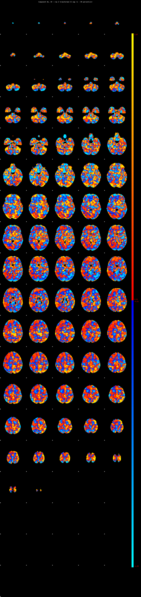

IC_39 Mixture Model fit
Means : 0.000000 11.913845 -3.236375
Vars : 1.000000 67.279143 1.506480
Prop. : 0.946251 0.032174 0.021576
This page produced automatically by MELODIC Version 3.15 - a part of FSL - FMRIB Software Library.